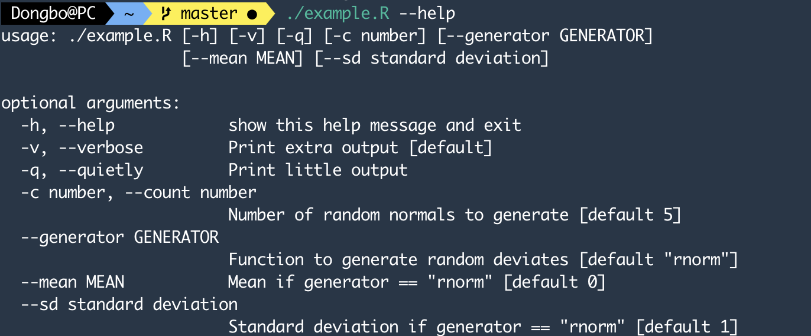
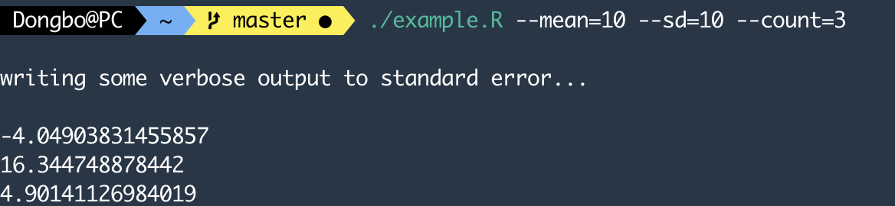
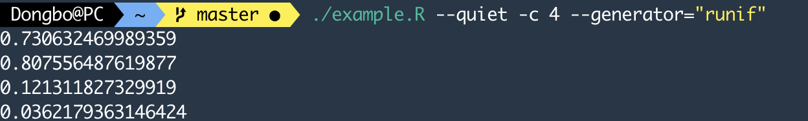

第 8 章 命令行
命令行对于初学者而言就像是一个黑色的魔法界面，但实际上命令行才是计算机本身模样。当我们使用命令行的时候，我们可以清楚的看到程序的输入、输出与执行过程，所以最接近数据工程的“透明原则”。与此同时，命令行脚本可以形成非常灵活的轻量级工具。因此，熟练掌握命令行界面对于数据处理非常重要。
我们不可能通过一章的篇幅帮助读者成为玩转命令行的专家，因此，本章的目的在于介绍最基本的命令行语法，希望借助本章的内容，为读者在未来研究与工作中使用和学习命令行工具留下合格的学习接口。
ls查看目录内的文件
cd改变路径
rm删除文件或文件夹
git版本控制相关的命令
less以分页方式查看文件内容
man查看命令文档
cat将多个文件连接起来输出
pwd打印当前路径
参考资料： Data Sciecne at the Command Line
8.1 R的命令行选项
为了能够使用Make来构建完整的数据自动分析流程，我们就需要R代码能够从命令行解析参数并在R代码中使用。argparse包是受到Python中同名包的启发开发的，其用法与Python中接近，可以让我们在跨语言编程的时候更加轻松。
8.1.1 Linux/Unix Shebang
在命令行中运行R脚本，可以使用Rscript example.R的方式，其中example.R是我们希望运行的脚本。在Linux和Unix系统中，有一种更简介的方式，即通过在脚本第一行添加#! /usr/bin/env Rscript的方式，来告诉操作系统这段脚本的要调用Rscript来运行。此时只要进入到example.R所在的路径中，使用命令./exmaple.R便可以直接运行这段代码。类似地，如果是一段Python3脚本的话，我们可以使用`#! /usr/bin/env Python3
另外，!#被称作Shebang，翻译过来就是“井号叹号”，上一次我听到这么草率的命名还是我办公室所在的“新建楼”。
8.1.2 argparse包实例
argparse包使用起来非常简洁，也没有太多函数。我们其官方教程中的一个实例来介绍如何使用它。
在命令行中的参数可以完整参数(用--调用)，与短参数(用-调用)，同时每一个参数都有其缺省值，以及对应的帮助文档解释。命令行参数本身有各种灵活的设置方式，感兴趣的读者可以进一步阅读Data Science at the Command Line.2。详细介绍这部分内容并不是本书的使命。
argparse包分为三个步骤，第一步是使用ArgumentParser()创建一个参数解析对象，第二步是使用add_argument函数为前面的对象增加参数，第三步是通过parse_args()把解析对象赋值并在后续程序中调用。
我们可以先把下面的脚本储存成为example.R，这段脚本的作用是输出若干个随机数，具体的随机分布与输出参数数量由命令行参数决定。
#! /usr/bin/env Rscript
library(argparse)
# 创建参数解析对象
parser <- ArgumentParser()
# 设置参数
# 设置第一个参数verbose，缩写为v，其作用是告诉脚本是否打印完整的计算过程，其缺省值为TRUE
parser$add_argument("-v", "--verbose", action="store_true", default=TRUE,
help="Print extra output [default]")
# 设置第二个参数quietly，缩写为q，其作用是修改verbose参数，当调用改参数时，verbose被修改为FALSE，从而导致不再打印计算过程
parser$add_argument("-q", "--quietly", action="store_false",
dest="verbose", help="Print little output")
# 设置第三个参数count，缩写为c，这是一个整数参数，缺省值5，在后续的代码中被用作确定输出随机数的个数
parser$add_argument("-c", "--count", type="integer", default=5,
help="Number of random normals to generate [default %(default)s]",
metavar="number")
# 设置第四个参数generator，无缩写，用于确定调用何种随机分布，缺省值rnorm对应于正态分布
parser$add_argument("--generator", default="rnorm",
help = "Function to generate random deviates [default \"%(default)s\"]")
# 设置第五个参数mean，无缩写，浮点数，用于确定正态分布的均值，缺省值为0
parser$add_argument("--mean", default=0, type="double",
help="Mean if generator == \"rnorm\" [default %(default)s]")
# 设置第五个参数sd，无缩写，浮点数，用于确定正态分布的标准差，缺省值为1
parser$add_argument("--sd", default=1, type="double",
metavar="standard deviation",
help="Standard deviation if generator == \"rnorm\" [default %(default)s]")
# 调用解析器，此时args就被赋值为命令行参数输入的相应值
args <- parser$parse_args()
# 根据verbose确定是否打印计算过程
if ( args$verbose ) {
write("writing some verbose output to standard error...\n", stderr())
}
# 根据其他参数，确定输出随机数的类型与次数
if( args$generator == "rnorm") {
cat(paste(rnorm(args$count, mean=args$mean, sd=args$sd), collapse="\n"))
} else {
cat(paste(do.call(args$generator, list(args$count)), collapse="\n"))
}
cat("\n")之后我们需要首先在命令行修改脚本的权限，为其添加可执行权限
sudo chmod +x example.R然后便可以执行该脚本，例如我们可以查该脚本对应的帮助，
./example.R --help输出结果为： 
或者使用参数输出3个正态分布随机数。
./example.R --mean=10 --sd=10 --count=3输出结果如下： 
也可以输出均匀分布的随机数，并且选择不打印计算过程。
./example.R --quiet -c 4 --generator="runif"输出结果如下： 
需要单独整理一期shell命令行的内容